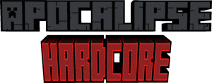

Configurações técnicas para o servidor dedicado: mods compatíveis, comandos e boas práticas para rodar o modpack sem lag e com máxima performance.
/tacz reload - recarrega munição/backpack sort - organiza mochilas/give @p tacz:45acp 64